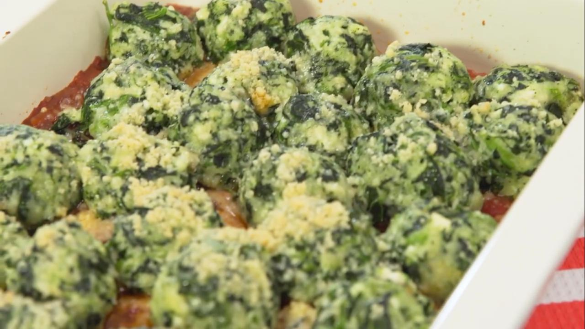

Malfatti de ricota y espinaca gratinados

Ingredientes
- 350 g de ricota firme.
- 250 g de espinaca sin líquido.
- Una cdta de ajo en polvo.
- 2 huevos.
- Una cdta de nuez moscada.
- 100 g de queso rallado fino.
- 150 g de harina.
- 50 g de queso rallado fino para gratinar.
Para la salsa
- Una cebolla.
- Una diente de ajo.
- Una lata de tomates en conserva.
- ½ taza de vino.
Procedimiento
- Descongelar la espinaca y retirar el agua. Escurrir bien.
- Dorar el ajo y la cebolla picada en aceite de oliva.
- En un recipiente, mezclar todos los ingredientes y condimentar.
- Armar bolitas un poco más chicas que una pelotita de ping pong.
- Cocinar en abundante agua con sal.